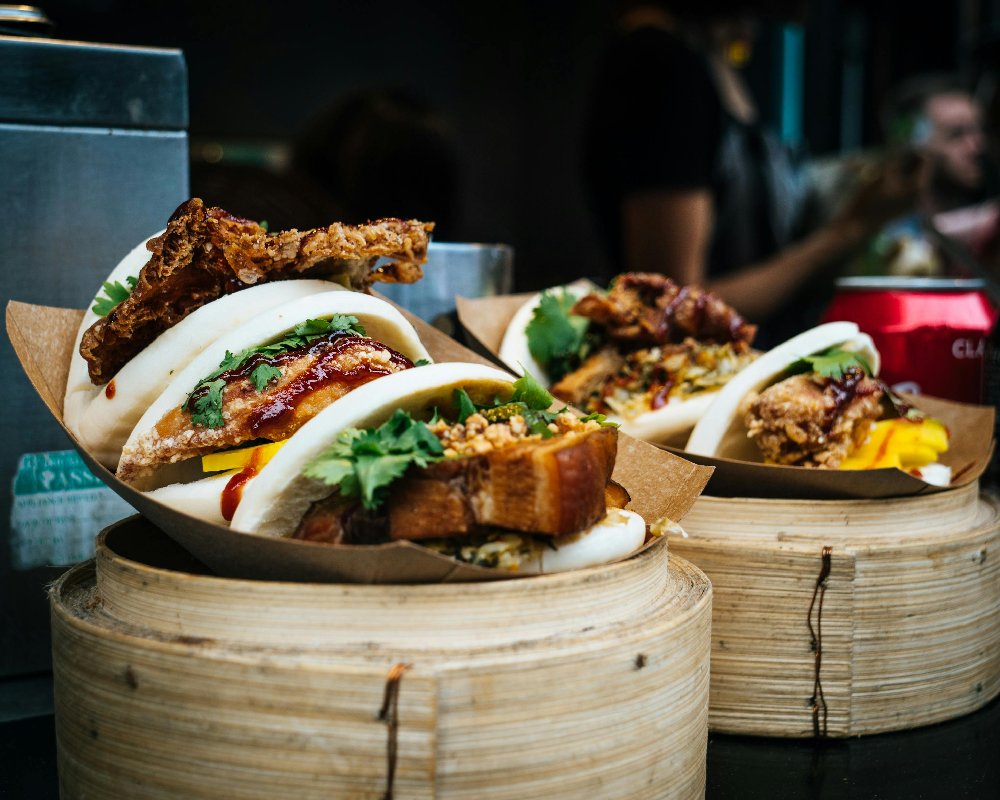

Sekret idealnego ramenu
Dowiedz się, jak przygotowujemy nasz kultowy ramen... Czytaj więcej
Połączenie tradycji Dalekiego Wschodu z nowoczesnym podejściem do gotowania.
Restauracja YAMI narodziła się z fascynacji kuchnią Azji...

Nasze menu łączy klasykę japońskiego sushi z nowoczesnymi interpretacjami.

Organizujesz spotkanie firmowe, przyjęcie rodzinne lub bankiet?

Chcesz nauczyć się przygotowywać sushi, ramen lub tajskie curry?
Dowiedz się, jak przygotowujemy nasz kultowy ramen... Czytaj więcej
Poznaj proces tworzenia sushi... Czytaj więcej
Tak, oferujemy zarówno odbiór osobisty, jak i dostawę.
Oczywiście! Nasze menu zawiera szeroki wybór potraw wege.